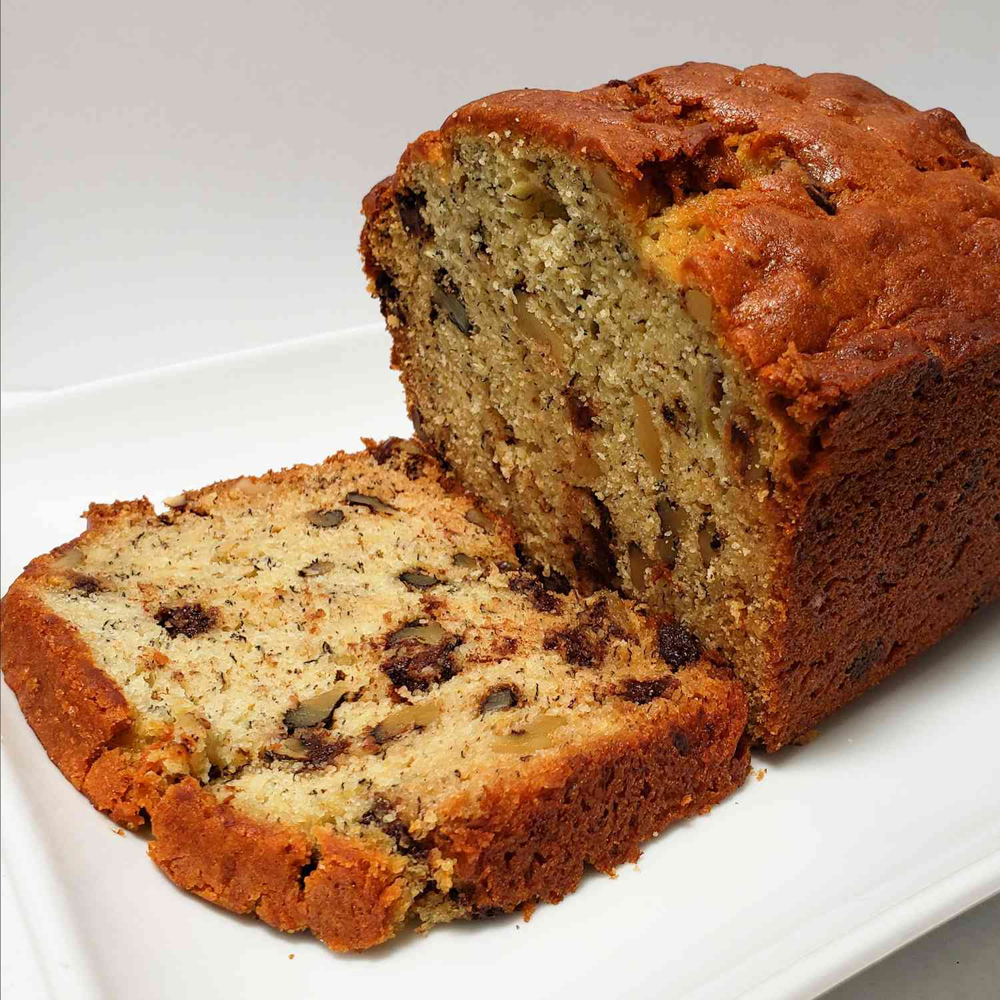

Banana Bread

This banana bread by Chef John is spiked with dark chocolate chips and walnuts.
Banana bread is one of those things people rarely make on purpose — only when
those last 3 bananas are almost black. However, this scrumptious loaf is so good
you'll want to make it well before the bananas reach that condition.
Ingredients
- cooking spray
- 2 cups all-purpose flour
- 1 teaspoon baking powder
- 1 teaspoon baking soda
- 1 teaspoon salt
- 1 cup white sugar
- ½ cup butter, softened
- 3 ripe bananas, mashed
- 2 large eggs
- 1 tablespoon milk
- ¼ teaspoon vanilla extract
- 1 cup chopped walnuts
- ⅓ cup semisweet chocolate chips
Steps
- Preheat the oven to 165 degrees. Coat a 9x4-inch loaf pan with cooking spray.
- Whisk together flour, baking powder, baking soda, and salt in a medium bowl; set aside.
- Beat together sugar and butter with an electric mixer in a large bowl until smooth.
Add mashed bananas and mix until combined. Add eggs, one at a time, beating well after each addition.
Stir in milk and vanilla.
- Stir in flour mixture, walnuts, and chocolate chips until just incorporated. Pour batter into the prepared loaf pan.
Tap pan on the counter to release any air pockets.
- Bake in the preheated oven until a toothpick inserted into the center comes out clean, about 1 hour and 10 minutes.
Let rest in the pan for 15 to 20 minutes. Remove bread from the pan, then slice and serve.